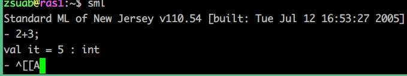

COMP3031: Principles of Programming Languages Labs
Fall 2014
Section: LA1
Time:
Tue 10:30AM-11:20AM
Room:
Rm 4210, Lift 19
SML Readline Support
SML does not support Readline such as repeat previous commands by pressing "up" button.

Using a wrapper is an alternative to bypass the issue. "rlwrap" is a wrapper which uses the GNU readline library to allow the editing of keyboard input for any other command.